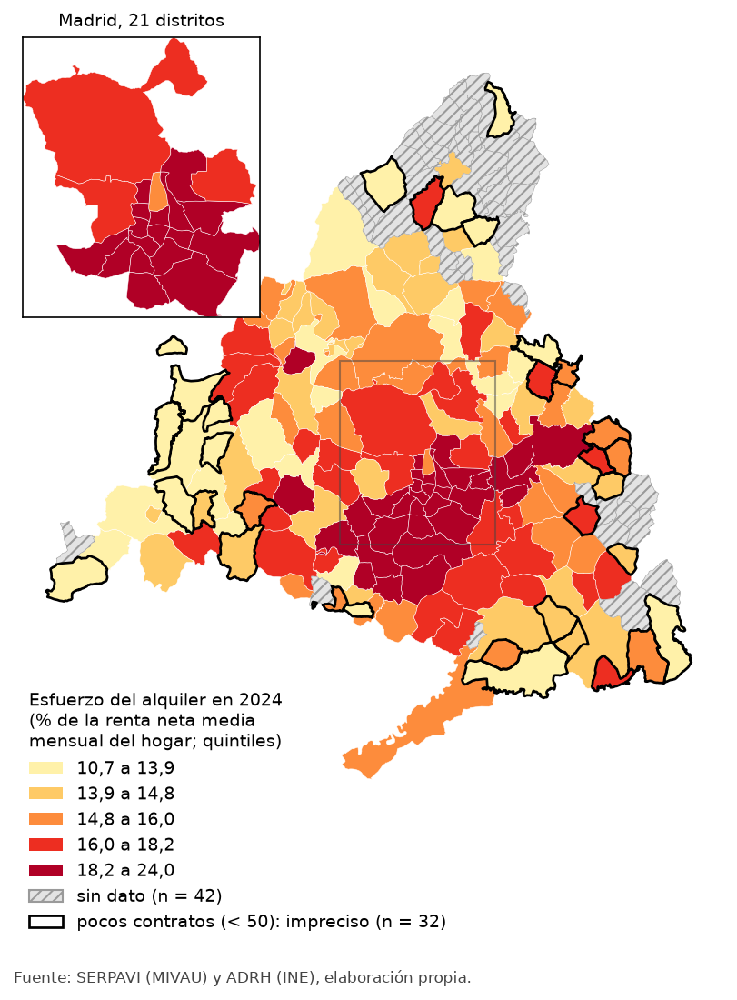

Esfuerzo de alquiler y Bono Alquiler Joven en la Comunidad de Madrid
Informe para la Administración del proyecto ¿Me sobra?. Página estática: los datos están en datos/analisis.json y se regeneran con python -m mesobra.pipeline_analisis.
Qué se mide
Esfuerzo de alquiler. Es la cuantía mediana mensual de los alquileres de vivienda colectiva declarados a Hacienda (SERPAVI) dividida entre la renta neta media mensual por hogar (Atlas de Distribución de Renta de los Hogares del INE). Se calcula para cada municipio y para cada distrito de Madrid, de 2015 a 2024 (fuente: SERPAVI, MIVAU; ADRH, INE; elaboración propia). El año es el ejercicio del IRPF en las dos fuentes, así que no hay desfase entre numerador y denominador.
Un esfuerzo de la quinta parte quiere decir que el alquiler mediano de la zona equivale a la quinta parte de la renta media de sus hogares. Sirve para comparar zonas y años. No es lo que paga una persona concreta: eso lo calcula la herramienta de la página principal.
Bono Alquiler Joven. Son las solicitudes, aceptadas y rechazadas de la convocatoria de 2022 en cada municipio, divididas entre sus jóvenes de 18 a 35 años a 1 de enero de 2023 (fuente: Bono Alquiler Joven 2022, Comunidad de Madrid; Censo anual de población, INE). La necesidad de cada municipio es su esfuerzo de alquiler de 2023, el año en que cae la mayor parte del plazo y del crédito de la convocatoria.
Cómo leer los mapas
Cada mapa pinta los municipios y, en el recuadro, los 21 distritos de Madrid, que a la escala de la Comunidad apenas se verían (fuente: datos/zonas.geojson). El gris con trama marca las zonas sin dato: municipios sin alquileres de vivienda colectiva en el SERPAVI y, desde 2020, los de menos de 100 residentes, a los que el INE asigna la renta común de su comarca (fuente: ADRH, INE). Madrid entero no se pinta como una zona más: se ve a través de sus distritos.
El esfuerzo en 2024

Los quintiles reparten las zonas con dato en cinco grupos del mismo tamaño, así que el mapa enseña la posición de cada zona respecto a las demás y no la distancia entre ellas. Con quintiles, 17 de los 21 distritos caen en el grupo más alto; con cinco intervalos iguales entre el 10,7 % y el 24,0 %, solo llegan 8, y la mayoría de las zonas queda entre el 13,3 % y el 16,0 % (fuente: SERPAVI y ADRH, 2024, elaboración propia).
En 2024 hay dato en 157 de las 199 zonas, y en la zona mediana el alquiler equivale al 15,3 % de la renta media del hogar (fuente: SERPAVI y ADRH, datos/analisis.json).
Los valores más altos están en el centro y el sur de la capital: Centro y Puente de Vallecas, 24,0 %; Usera, 23,4 %; Carabanchel, 22,6 %; Villaverde, 22,1 % (fuente: SERPAVI y ADRH, 2024).
En el norte de la capital el esfuerzo baja: Chamartín, 16,0 %; Moncloa-Aravaca, 16,1 %; Salamanca, 19,0 % (fuente: SERPAVI y ADRH, 2024). Para Madrid entero es del 19,6 % (fuente: SERPAVI y ADRH, 2024).
Los más bajos son municipios pequeños: Cadalso de los Vidrios, 10,7 %; Santa María de la Alameda y Navas del Rey, 11,6 % (fuente: SERPAVI y ADRH, 2024).
El norte no sale más bajo por tener alquileres baratos. En Chamartín el alquiler mediano es de 1.126 € al mes, más que en Centro (950 €), pero la renta media del hogar es de 7.051 € al mes, casi el doble que en Centro (3.965 €) (fuente: SERPAVI y ADRH, 2024).
Cambio desde 2015

De las 142 zonas con dato en 2015 y en 2024, el esfuerzo sube en 68 y la mediana del cambio es de −0,06 puntos porcentuales: prácticamente plano (fuente: SERPAVI y ADRH, sin la fila de Madrid entero).
En Madrid entero pasa del 19,1 % en 2015 a un máximo del 21,0 % en 2020 y vuelve al 19,6 % en 2024 (fuente: SERPAVI y ADRH). Los extremos son Pelayos de la Presa, que baja 4,0 puntos, y el distrito de Salamanca, que sube 2,3 (fuente: SERPAVI y ADRH, 2015-2024).
Esto no dice que alquilar hoy cueste lo mismo que en 2015. El SERPAVI recoge todos los inmuebles con ingresos de alquiler declarados en el año, incluidos los contratos firmados hace tiempo, y no el precio de los contratos nuevos (fuente: metodología del SERPAVI, MIVAU, 18-03-2026, §3.1). Con los contratos declarados, el peso del alquiler sobre la renta media apenas ha cambiado desde 2015; quien firma ahora un contrato puede estar pagando bastante más.
Bono Alquiler Joven frente a la necesidad

Los datos
La convocatoria de 2022 tuvo 51.735 solicitudes y 11.477 aceptadas (fuente: Bono Alquiler Joven 2022, Comunidad de Madrid). De ellas, 3.352 solicitudes van en una fila «Otro», sin municipio, y ninguna se aceptó (fuente: Bono Alquiler Joven 2022).
Contando esa fila se aceptó el 22,2 % de las solicitudes; sin ella, el 23,7 % (fuente: Bono Alquiler Joven 2022, elaboración propia).
Hay solicitudes en 159 municipios. En 134 se puede calcular el esfuerzo; los otros 25, con 74 solicitudes, no tienen alquileres de vivienda colectiva en el SERPAVI y quedan fuera del gráfico y de los cálculos, nunca como cero (fuente: Bono 2022 y SERPAVI, elaboración propia).
Madrid tuvo 30.961 solicitudes y 7.324 aceptadas, 9,6 aceptadas por cada 1.000 jóvenes; en el municipio mediano de los 134 fueron 4,0 (fuente: Bono 2022; Censo anual, INE; elaboración propia).
Siete municipios están en el tercio con más esfuerzo y en el tercio con menos aceptadas por joven: Boadilla del Monte, Majadahonda, Talamanca de Jarama, Carabaña, Quijorna, Santorcaz y Villamanrique de Tajo (fuente: Bono 2022, Censo anual, SERPAVI y ADRH).
Cinco de ellos tienen menos de 800 jóvenes y en cuatro no se aceptó ninguna solicitud. Con tan pocos casos, una sola solicitud mueve mucho la tasa, así que esta lista sirve para mirar esos municipios de cerca, no para ordenarlos (fuente: Bono 2022 y Censo anual, INE).
Qué dice la estadística
En los municipios donde el alquiler se come más renta, más jóvenes piden el Bono. A todos se les rechaza en la misma proporción, así que hay más rechazos porque hay más solicitudes. La relación es débil y en parte se explica porque allí alquilan más jóvenes: es una pista, no una prueba.
De dónde sale esa lectura, con las cifras de bono_inferencia.json (python -m mesobra.bono_inferencia):
- Modelo principal: regresión con error espacial (SEM con heterocedasticidad, GMM iterado) de las rechazadas por 1.000 jóvenes sobre el esfuerzo de 2023, con la renta media del hogar y el tope de alquiler del Bono como controles. Da β ≈ 87 y p = 0,043 con 5 vecinos y 0,048 con 8, en 134 municipios (fuente:
bono_inferencia.json; estimado). Un punto más de esfuerzo va con unas 0,9 rechazadas más por 1.000 jóvenes (fuente:bono_inferencia.json; estimado). - La segunda vía, mínimos cuadrados con errores robustos a la autocorrelación (HAC), no lo confirma: p = 0,17 (fuente:
bono_inferencia.json; estimado). Por eso la conclusión es «indicio» y no «relación robusta». El modelo principal y su regla se eligieron después de ver los datos. - La correlación parcial fijada antes de ver el resultado da r = 0,137, con p = 0,118 (fuente:
bono_inferencia.json; estimado). - Más volumen, misma proporción: entre quienes solicitan, la proporción aceptada no cambia con el esfuerzo (p = 0,82, modelo quasi-binomial; fuente:
bono_inferencia.json; estimado). «Rechazadas por 1.000 jóvenes» mide sobre todo cuántos piden el Bono, no que allí se rechace más. - En los 112 municipios con porcentaje de jóvenes en alquiler del Censo 2021 (los que tienen al menos 300 personas de 20 a 34 años), ese porcentaje se correlaciona +0,27 con el esfuerzo y +0,61 con las solicitudes por 1.000 (fuente: Censo 2021, INE;
bono_inferencia.json; estimado). - Teniendo en cuenta ese porcentaje, el efecto baja a β = 46 (p = 0,22) con 5 vecinos y a β = 34 (p = 0,37) con 8. Es un análisis exploratorio (fuente:
bono_inferencia.json; estimado). - Sensibilidad, sin elegir la que más conviene: en esos 112 municipios el modelo principal sale significativo (p = 0,022 y 0,030), y con los jóvenes en vivienda alquilada como denominador no es concluyente (r = 0,153) (fuente:
bono_inferencia.json; estimado).
Los rechazos no se pueden leer como «demanda sin crédito»: mezclan a quien no cumplía los requisitos y a quien llegó cuando el crédito ya se había agotado, y el dato publicado no separa los motivos.
Limitaciones
- La renta es la media de todos los hogares, propietarios incluidos, que suelen ganar más que quien alquila. El indicador subestima el esfuerzo de los inquilinos, y al ser una media los ingresos altos la empujan hacia arriba.
- El SERPAVI son contratos declarados, no precios de oferta, y solo vivienda colectiva. Incluye contratos antiguos, así que va por detrás del mercado.
- Del Bono hay un solo año, la convocatoria de 2022, comparada con el esfuerzo de 2023. Con un año no se puede ver si la ayuda sigue a la necesidad con el tiempo.
- El motivo de los rechazos no está publicado: no cumplir requisitos y crédito agotado van juntos.
- La solicitud cuenta en el municipio del piso, no en el de residencia; cuenta solicitudes, no personas, y el denominador son todos los jóvenes, no los inquilinos ni quienes cumplen los requisitos.
- Son datos por municipio: lo que pasa en un municipio no se puede atribuir a cada joven que vive en él (falacia ecológica). Madrid entra en el Bono como un solo municipio.
- Los municipios sin esfuerzo son pequeños o rurales, así que el resultado del Bono habla de los municipios urbanos.
- Es una correlación entre municipios, no un efecto causal.
Fuentes
- SERPAVI, base de datos 2011-2024, vivienda colectiva. Origen de los datos: Ministerio de Vivienda y Agenda Urbana, actualizado el 2026-07-09 (fuente: MIVAU).
- Atlas de Distribución de Renta de los Hogares, tabla 31097, actualizada el 2026-10-15, y Censo anual de población, tabla 68542, actualizada el 2025-12-02. Elaboración propia con datos extraídos del sitio web del INE: www.ine.es (fuente: INE).
- Bono Alquiler Joven 2022, actualizado el 2026-02-03. Fuente de los datos: Comunidad de Madrid (fuente: portal de datos abiertos).
- Censo de Población 2021, personas por régimen de tenencia y edad, consulta a medida. Elaboración propia con datos extraídos del sitio web del INE: www.ine.es (fuente: INE).
Ni el Ministerio de Vivienda y Agenda Urbana, ni el INE, ni la Comunidad de Madrid participan en este proyecto ni lo patrocinan.